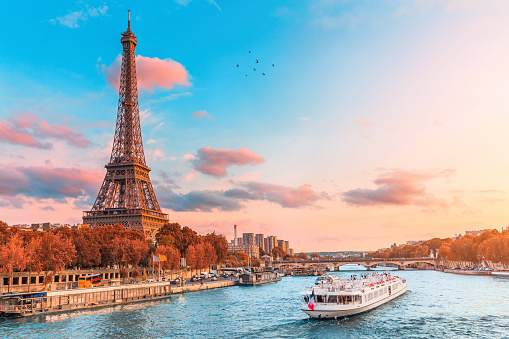

Paris, France

In paris a common sight to see is, of course, the Eiffel Tower. But other must see locations are the Louvre Museum, which is the worlds most visited museum, and Cathédrale Notre-Dame de Paris, which was built in honor of Virgin Mary and considered one of the finest works of French Gothic Architecture. Some things many visitors love to do while in Paris is to take a riverboat cruise along the siene, watch a classic French cabaret show, a bike ride around Bois de Boulonge park, or gallery-hop through Saint-Germain. A week long trip to paris for 2 peoples price estimates around $2,700.
visit the Eiffel Tower website
Visit the Louvre Museum website
Visit the Notre-Dame website
Visit the Bois de Boulange website
Get tickets to a French Cabaret Show
Learn more about the Siene river
Learn more about Saint-Germain
Maldives
While visiting the Maldives some of the biggest sights to see is the sea of stars in Vaadhoo, the Banana reef in Malé, the Bikini beach, and the sand bank. Some common activities that tourists take part in include scuba diving, snorkeling, dolphin and whale watching, and several different tours of the islands. The maldives have over 132 resorts for visitors and tourists. A 2 person trip to the maldives for 1 weeks price estimates to around $3,400.
Get directions to the sea of stars
Visit the Banana Reef website
Get directions to the Bikini beach
Get directions to the Sand Bank
Vienna, Austria
While in Vienna there are many beutiful attractions to see like the Schönbrunn Palace, the Belvedere Palace, the Vienna State Opera House, or St. Charles church. Some other things you can do while in Vienna, Austria is you can watch the spanish riding show, visit the vienna zoo, visit the Prater and ride the giant Ferris Wheel. A week long trip to Vienna's cost would estimate around $2,700 for 2 people.
Visit the Schönbrunn Palace website
Visit the Belvedere Palace website
Get directions to the Vienna State Opera
Visit the St. Charles church website
See a spanish riding show
Book tickets to the Vienna Zoo
Visit the Prater website